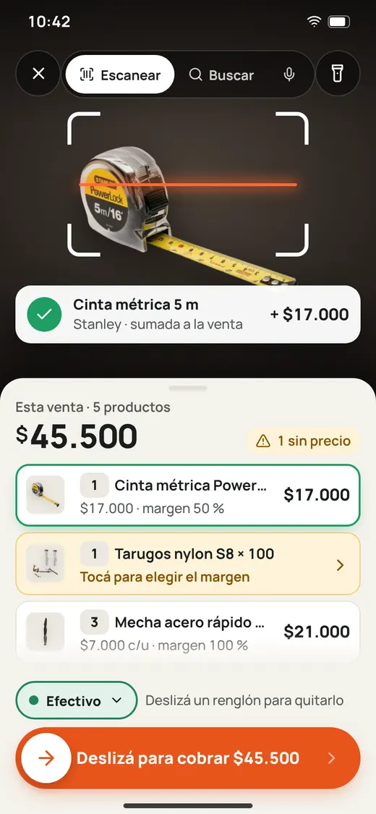

Mejoras y errores
Sin conexión · 1 por enviar
Que en Contar se pueda dictar la cantidad


Tickets
Que «llave» muestre primero las combinadas
Por enviar · sale al volver la señal
Los tickets enviados se ven cuando vuelva la conexión. Lo tuyo sale solo, una vez.